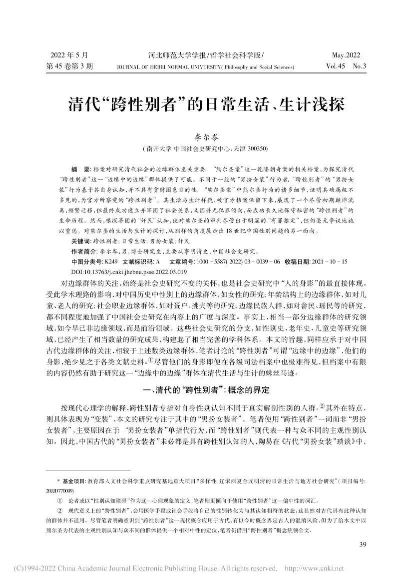
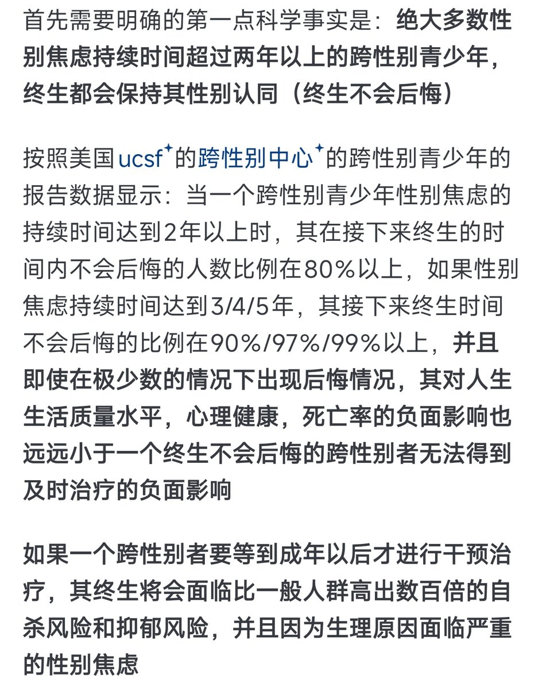

早在2012年，小于12岁的跨性别女性就已经是非常常见的情况了，那时我认识的小于12岁的跨性别女性其中绝大多数至今仍然保持其跨性别女性的性别认同。（剩下少数已失联或已死亡）。而我自己本人也是自6岁开始有性别焦虑，11岁开始自我性别认同觉察
现在的人总是喜欢反复强调：“十一二岁太早了吧，一定是受到了境外思想的荼毒”。
但是如果照这个理论，大清时期就有境外思想荼毒了。

现在的人总是喜欢反复强调：“十一二岁太早了吧，一定是受到了境外思想的荼毒”。
但是如果照这个理论，大清时期就有境外思想荼毒了。


和往年一样，总会有人关心「未成年人如果进行hrt，未来后悔怎么办」
但「性别焦虑超过三年，几乎终生不可能后悔」「未成年阶段可使用阻滞剂预留犹豫时间」「跨女性别觉察后未及时得到科学治疗会造成极高自杀率」
等科学事实，却视而不见
看来「无数人自杀死掉」在他们眼中比不上「有人变性后后悔」重要 https://t.co/rmkxo5S48J https://t.co/GtS4zLdJlE
但「性别焦虑超过三年，几乎终生不可能后悔」「未成年阶段可使用阻滞剂预留犹豫时间」「跨女性别觉察后未及时得到科学治疗会造成极高自杀率」
等科学事实，却视而不见
看来「无数人自杀死掉」在他们眼中比不上「有人变性后后悔」重要 https://t.co/rmkxo5S48J https://t.co/GtS4zLdJlE